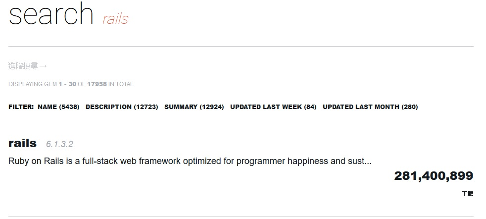
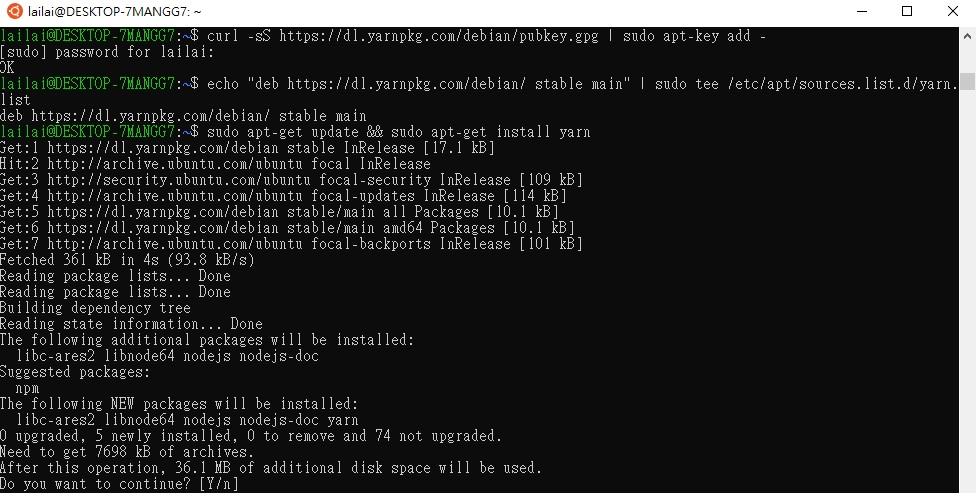

安裝Rails
在安裝之前，我們先來介紹一下Ruby的套件管理平台
這裡面有許多套件（gem），其中Rails也是一個用Ruby這個程式語言寫成的套件之一
搜尋rails，第一個就是我們今天要下載的套件，可以看到它的下載次數已經高達兩億八千一百四十萬次數，跟其他的套件相較之下，十分的可觀。

點進去之後，在右邊下載次數的下面，有GEMFILE和安裝兩個欄位，我們先選下面的gem install rails這欄複製，然後開啟Ubuntu貼上按Enter，就會開始安裝rails的最新版本。
如果想要安裝其他版本（例如 5.2.6 版）的話，也可以在安裝時輸入gem install rails -v 5.2.6即可。在剛剛點進去的頁面左邊，可以看到該套件的版本列表。
因為rails是一個龐大的套件，所以安裝可能需要花一些時間。
安裝完成之後輸入rails -v可以查詢目前rails的版本。
安裝yarn
由於Rails 6以上的版本將webpacker納入標準，而安裝webpacker又需要yarn這個東西，因此以Rails 6(含)以上的版本開發時，需要再安裝yarn。
先在Ubuntu輸入
curl -sS https://dl.yarnpkg.com/debian/pubkey.gpg | sudo apt-key add -，按Enter後會被要求輸入之前安裝Ubuntu時設定的密碼。接著輸入
echo "deb https://dl.yarnpkg.com/debian/ stable main" | sudo tee /etc/apt/sources.list.d/yarn.list後按Enter。繼續輸入
sudo apt-get update && sudo apt-get install yarn後按Enter，它會跳一個確認是否要繼續安裝，直接按Enter即可。

跑完之後，輸入
yarn --version會顯示目前yarn的版本，有出現的話就代表成功安裝完成。之後如果有
rails new 專案名稱，記得要輸入rails webpacker:install，才能順利開啟網頁。
安裝Curl、NVM、NodeJS
參考microsoft官方文件，在Ubuntu依序輸入以下指令。
安裝crul
sudo apt-get install curl
Enter後會被要求輸入密碼。
安裝nvm（Node Version Manager）
curl -o- https://raw.githubusercontent.com/nvm-sh/nvm/v0.35.3/install.sh | bash
這個步驟輸入完之後，將Ubuntu關掉重開，接著輸入command -v nvm看是否有出現nvm，有的話表示成功安裝nvm。
安裝nodeJS
nvm install --lts
lts表示latest stable，最新的穩定版本。安裝完後輸入node -v可以查看目前node的版本。
轉載請註明來源。